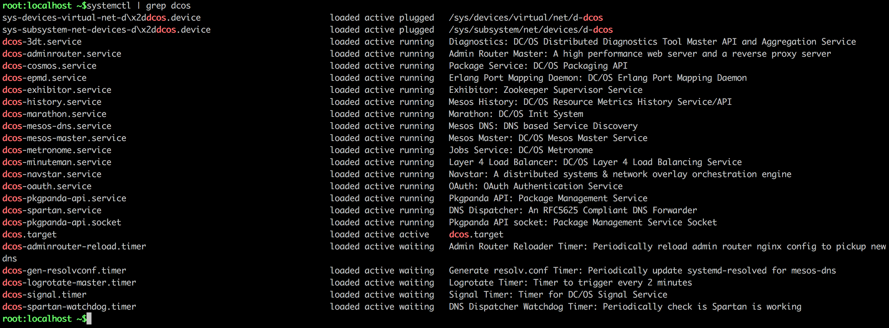
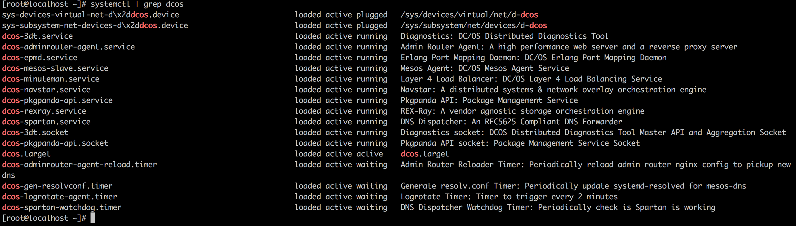

<!DOCTYPE HTML>
<html lang="" >
    <head>
        <title>系统服务 · GitBook</title>
        <meta charset="UTF-8">
        <meta http-equiv="X-UA-Compatible" content="IE=edge" />
        <meta content="text/html; charset=utf-8" http-equiv="Content-Type">
        <meta name="description" content="">
        <meta name="generator" content="GitBook 3.2.0">
        
        
        
    
    <link rel="stylesheet" href="gitbook/style.css">

    
            
                
                <link rel="stylesheet" href="gitbook/gitbook-plugin-highlight/website.css">
                
            
                
                <link rel="stylesheet" href="gitbook/gitbook-plugin-search/search.css">
                
            
                
                <link rel="stylesheet" href="gitbook/gitbook-plugin-fontsettings/website.css">
                
            
        

    

    
        
    
        
    
        
    
        
    
        
    
        
    

        
    
    
    <meta name="HandheldFriendly" content="true"/>
    <meta name="viewport" content="width=device-width, initial-scale=1, user-scalable=no">
    <meta name="apple-mobile-web-app-capable" content="yes">
    <meta name="apple-mobile-web-app-status-bar-style" content="black">
    <link rel="apple-touch-icon-precomposed" sizes="152x152" href="gitbook/images/apple-touch-icon-precomposed-152.png">
    <link rel="shortcut icon" href="gitbook/images/favicon.ico" type="image/x-icon">

    
    <link rel="next" href="dcos-component-exhibitor.html" />
    
    
    <link rel="prev" href="dcos-marathon-constraints.html" />
    

    </head>
    <body>
        
<div class="book">
    <div class="book-summary">
        
            
<div id="book-search-input" role="search">
    <input type="text" placeholder="Type to search" />
</div>

            
                <nav role="navigation">
                


<ul class="summary">
    
    

    

    
        
        <li class="header">DC/OS之导论</li>
        
        
    
        <li class="chapter " data-level="1.1" data-path="./">
            
                <a href="./">
            
                    
                    导论
            
                </a>
            

            
            <ul class="articles">
                
    
        <li class="chapter " data-level="1.1.1" data-path="dcos概览.html">
            
                <a href="dcos概览.html">
            
                    
                    DC/OS概览
            
                </a>
            

            
        </li>
    
        <li class="chapter " data-level="1.1.2" data-path="dcos-basic-theory.html">
            
                <a href="dcos-basic-theory.html">
            
                    
                    系统基础
            
                </a>
            

            
            <ul class="articles">
                
    
        <li class="chapter " data-level="1.1.2.1" data-path="dcos-basic-theory-terminologies.html">
            
                <a href="dcos-basic-theory-terminologies.html">
            
                    
                    名词术语
            
                </a>
            

            
        </li>
    

            </ul>
            
        </li>
    
        <li class="chapter " data-level="1.1.3" data-path="dcos-theory-schedule-strategy.html">
            
                <a href="dcos-theory-schedule-strategy.html">
            
                    
                    资源调度
            
                </a>
            

            
        </li>
    

            </ul>
            
        </li>
    
        <li class="chapter " data-level="1.2" data-path="dcos-install.html">
            
                <a href="dcos-install.html">
            
                    
                    环境搭建
            
                </a>
            

            
            <ul class="articles">
                
    
        <li class="chapter " data-level="1.2.1" data-path="dcos-install-default.html">
            
                <a href="dcos-install-default.html">
            
                    
                    安装环境准备
            
                </a>
            

            
            <ul class="articles">
                
    
        <li class="chapter " data-level="1.2.1.1" data-path="dcos-install-docker-on-centos.html">
            
                <a href="dcos-install-docker-on-centos.html">
            
                    
                    在Centos上安装Docker
            
                </a>
            

            
        </li>
    

            </ul>
            
        </li>
    
        <li class="chapter " data-level="1.2.2" data-path="dcos-install-by-gui.html">
            
                <a href="dcos-install-by-gui.html">
            
                    
                    GUI安装
            
                </a>
            

            
        </li>
    
        <li class="chapter " data-level="1.2.3" data-path="dcos-install-by-cli.html">
            
                <a href="dcos-install-by-cli.html">
            
                    
                    通过CLI安装
            
                </a>
            

            
        </li>
    
        <li class="chapter " data-level="1.2.4" data-path="dcos-install-by-advanced-mode.html">
            
                <a href="dcos-install-by-advanced-mode.html">
            
                    
                    高级安装
            
                </a>
            

            
        </li>
    

            </ul>
            
        </li>
    
        <li class="chapter " data-level="1.3" data-path="dcos-install-maintainance.html">
            
                <a href="dcos-install-maintainance.html">
            
                    
                    集群维护
            
                </a>
            

            
            <ul class="articles">
                
    
        <li class="chapter " data-level="1.3.1" data-path="dcos-install-backup-installer-file.html">
            
                <a href="dcos-install-backup-installer-file.html">
            
                    
                    备份集群安装文件
            
                </a>
            

            
        </li>
    
        <li class="chapter " data-level="1.3.2" data-path="dcos-install-nodes-management.html">
            
                <a href="dcos-install-nodes-management.html">
            
                    
                    集群节点管理
            
                </a>
            

            
        </li>
    
        <li class="chapter " data-level="1.3.3" data-path="dcos-install-m-uninstall-all.html">
            
                <a href="dcos-install-m-uninstall-all.html">
            
                    
                    集群卸载
            
                </a>
            

            
        </li>
    

            </ul>
            
        </li>
    
        <li class="chapter " data-level="1.4" data-path="dcos-install-faq.html">
            
                <a href="dcos-install-faq.html">
            
                    
                    FAQ
            
                </a>
            

            
        </li>
    

    
        
        <li class="header">DC/OS之原理</li>
        
        
    
        <li class="chapter " data-level="2.1" data-path="dcos-theory-overview.html">
            
                <a href="dcos-theory-overview.html">
            
                    
                    理解DC/OS
            
                </a>
            

            
            <ul class="articles">
                
    
        <li class="chapter " data-level="2.1.1" data-path="dcos-dcos-admin-ports.html">
            
                <a href="dcos-dcos-admin-ports.html">
            
                    
                    DC/OS内部端口
            
                </a>
            

            
        </li>
    

            </ul>
            
        </li>
    
        <li class="chapter " data-level="2.2" data-path="dcos-mesos.html">
            
                <a href="dcos-mesos.html">
            
                    
                    Mesos
            
                </a>
            

            
            <ul class="articles">
                
    
        <li class="chapter " data-level="2.2.1" data-path="dcos-mesos-attributes-and-resources.html">
            
                <a href="dcos-mesos-attributes-and-resources.html">
            
                    
                    资源与属性
            
                </a>
            

            
        </li>
    
        <li class="chapter " data-level="2.2.2" data-path="dcos-mesos-roles.html">
            
                <a href="dcos-mesos-roles.html">
            
                    
                    角色（Roles）
            
                </a>
            

            
        </li>
    
        <li class="chapter " data-level="2.2.3" data-path="dcos-mesos-reservation.html">
            
                <a href="dcos-mesos-reservation.html">
            
                    
                    资源预留（Reservation）
            
                </a>
            

            
        </li>
    
        <li class="chapter " data-level="2.2.4" data-path="dcos-mesos-weights.html">
            
                <a href="dcos-mesos-weights.html">
            
                    
                    权重（Weights）
            
                </a>
            

            
        </li>
    
        <li class="chapter " data-level="2.2.5" data-path="dcos-mesos-quota.html">
            
                <a href="dcos-mesos-quota.html">
            
                    
                    配额（Quota）
            
                </a>
            

            
        </li>
    
        <li class="chapter " data-level="2.2.6" data-path="dcos-mesos-agent-recovery.html">
            
                <a href="dcos-mesos-agent-recovery.html">
            
                    
                    节点恢复
            
                </a>
            

            
        </li>
    
        <li class="chapter " data-level="2.2.7" data-path="dcos-mesos-authorization.html">
            
                <a href="dcos-mesos-authorization.html">
            
                    
                    Authorization
            
                </a>
            

            
        </li>
    
        <li class="chapter " data-level="2.2.8" data-path="dcos-mesos-resources-drf.html">
            
                <a href="dcos-mesos-resources-drf.html">
            
                    
                    资源分配
            
                </a>
            

            
        </li>
    

            </ul>
            
        </li>
    
        <li class="chapter " data-level="2.3" data-path="dcos-marathon.html">
            
                <a href="dcos-marathon.html">
            
                    
                    Marathon
            
                </a>
            

            
            <ul class="articles">
                
    
        <li class="chapter " data-level="2.3.1" data-path="dcos-marathon-health-checks.html">
            
                <a href="dcos-marathon-health-checks.html">
            
                    
                    应用健康检查
            
                </a>
            

            
        </li>
    
        <li class="chapter " data-level="2.3.2" data-path="dcos-marathon-container.html">
            
                <a href="dcos-marathon-container.html">
            
                    
                    容器运行管理
            
                </a>
            

            
        </li>
    
        <li class="chapter " data-level="2.3.3" data-path="dcos-marathon-app-deployments.html">
            
                <a href="dcos-marathon-app-deployments.html">
            
                    
                    应用服务部署
            
                </a>
            

            
        </li>
    
        <li class="chapter " data-level="2.3.4" data-path="dcos-marathon-event-bus.html">
            
                <a href="dcos-marathon-event-bus.html">
            
                    
                    事件总线
            
                </a>
            

            
        </li>
    
        <li class="chapter " data-level="2.3.5" data-path="dcos-marathon-constraints.html">
            
                <a href="dcos-marathon-constraints.html">
            
                    
                    约束
            
                </a>
            

            
        </li>
    

            </ul>
            
        </li>
    
        <li class="chapter active" data-level="2.4" data-path="dcos-system-components.html">
            
                <a href="dcos-system-components.html">
            
                    
                    系统服务
            
                </a>
            

            
            <ul class="articles">
                
    
        <li class="chapter " data-level="2.4.1" data-path="dcos-component-exhibitor.html">
            
                <a href="dcos-component-exhibitor.html">
            
                    
                    Exhibitor
            
                </a>
            

            
            <ul class="articles">
                
    
        <li class="chapter " data-level="2.4.1.1" data-path="dcos-component-exhibitor-notes.html">
            
                <a href="dcos-component-exhibitor-notes.html">
            
                    
                    理解Exhibitor
            
                </a>
            

            
        </li>
    
        <li class="chapter " data-level="2.4.1.2" data-path="dcos-component-exhibitor-as-service.html">
            
                <a href="dcos-component-exhibitor-as-service.html">
            
                    
                    Exhibitor on DC/OS
            
                </a>
            

            
        </li>
    

            </ul>
            
        </li>
    
        <li class="chapter " data-level="2.4.2" data-path="dcos-component-3dt.html">
            
                <a href="dcos-component-3dt.html">
            
                    
                    3DT
            
                </a>
            

            
        </li>
    
        <li class="chapter " data-level="2.4.3" data-path="dcos-component-adminrouter.html">
            
                <a href="dcos-component-adminrouter.html">
            
                    
                    Adminrouter
            
                </a>
            

            
        </li>
    
        <li class="chapter " data-level="2.4.4" data-path="dcos-component-cosmos.html">
            
                <a href="dcos-component-cosmos.html">
            
                    
                    Cosmos
            
                </a>
            

            
        </li>
    
        <li class="chapter " data-level="2.4.5" data-path="dcos-component-minuteman.html">
            
                <a href="dcos-component-minuteman.html">
            
                    
                    Minuteman
            
                </a>
            

            
        </li>
    
        <li class="chapter " data-level="2.4.6" data-path="dcos-component-spartan.html">
            
                <a href="dcos-component-spartan.html">
            
                    
                    Spartan
            
                </a>
            

            
        </li>
    

            </ul>
            
        </li>
    
        <li class="chapter " data-level="2.5" data-path="dcos-mesos-containerizer.html">
            
                <a href="dcos-mesos-containerizer.html">
            
                    
                    容器化
            
                </a>
            

            
            <ul class="articles">
                
    
        <li class="chapter " data-level="2.5.1" data-path="dcos-mesos-containerizer-internals.html">
            
                <a href="dcos-mesos-containerizer-internals.html">
            
                    
                    容器化实现细节
            
                </a>
            

            
        </li>
    
        <li class="chapter " data-level="2.5.2" data-path="dcos-mesos-mesos-containerizer.html">
            
                <a href="dcos-mesos-mesos-containerizer.html">
            
                    
                    Mesos容器化
            
                </a>
            

            
            <ul class="articles">
                
    
        <li class="chapter " data-level="2.5.2.1" data-path="dcos-mesos-mesos-containerizer-docker-volume.html">
            
                <a href="dcos-mesos-mesos-containerizer-docker-volume.html">
            
                    
                    Docker卷支持
            
                </a>
            

            
        </li>
    
        <li class="chapter " data-level="2.5.2.2" data-path="dcos-mesos-containerizer-cni.html">
            
                <a href="dcos-mesos-containerizer-cni.html">
            
                    
                    容器网络接口
            
                </a>
            

            
        </li>
    

            </ul>
            
        </li>
    
        <li class="chapter " data-level="2.5.3" data-path="dcos-mesos-docker-containerizer.html">
            
                <a href="dcos-mesos-docker-containerizer.html">
            
                    
                    Docker容器化
            
                </a>
            

            
        </li>
    
        <li class="chapter " data-level="2.5.4" data-path="dcos-marathon-container.html">
            
                <a href="dcos-marathon-container.html">
            
                    
                    容器运行管理
            
                </a>
            

            
        </li>
    

            </ul>
            
        </li>
    
        <li class="chapter " data-level="2.6" data-path="dcos-network.html">
            
                <a href="dcos-network.html">
            
                    
                    容器网络
            
                </a>
            

            
            <ul class="articles">
                
    
        <li class="chapter " data-level="2.6.1" data-path="dcos-network-marathon-ports.html">
            
                <a href="dcos-network-marathon-ports.html">
            
                    
                    服务端口配置
            
                </a>
            

            
        </li>
    

            </ul>
            
        </li>
    
        <li class="chapter " data-level="2.7" data-path="dcos-service-discovery.html">
            
                <a href="dcos-service-discovery.html">
            
                    
                    服务发现与负载
            
                </a>
            

            
            <ul class="articles">
                
    
        <li class="chapter " data-level="2.7.1" data-path="dcos-network-vips.html">
            
                <a href="dcos-network-vips.html">
            
                    
                    VIPs
            
                </a>
            

            
            <ul class="articles">
                
    
        <li class="chapter " data-level="2.7.1.1" data-path="dcos-network-vips-lb.html">
            
                <a href="dcos-network-vips-lb.html">
            
                    
                    基于VIPs的负载调度
            
                </a>
            

            
        </li>
    

            </ul>
            
        </li>
    
        <li class="chapter " data-level="2.7.2" data-path="dcos-component-marathon-lb.html">
            
                <a href="dcos-component-marathon-lb.html">
            
                    
                    Marathon-LB
            
                </a>
            

            
            <ul class="articles">
                
    
        <li class="chapter " data-level="2.7.2.1" data-path="dcos-component-marathon-lb-basic.html">
            
                <a href="dcos-component-marathon-lb-basic.html">
            
                    
                    基本概念
            
                </a>
            

            
        </li>
    
        <li class="chapter " data-level="2.7.2.2" data-path="dcos-component-marathon-lb-advanced.html">
            
                <a href="dcos-component-marathon-lb-advanced.html">
            
                    
                    高级特性
            
                </a>
            

            
        </li>
    
        <li class="chapter " data-level="2.7.2.3" data-path="dcos-component-marathon-lb-template.html">
            
                <a href="dcos-component-marathon-lb-template.html">
            
                    
                    配置参考
            
                </a>
            

            
        </li>
    
        <li class="chapter " data-level="2.7.2.4" data-path="dcos-component-marathon-lb-tutorials.html">
            
                <a href="dcos-component-marathon-lb-tutorials.html">
            
                    
                    应用示例
            
                </a>
            

            
        </li>
    

            </ul>
            
        </li>
    
        <li class="chapter " data-level="2.7.3" data-path="dcos-component-mesos-dns.html">
            
                <a href="dcos-component-mesos-dns.html">
            
                    
                    Mesos-DNS
            
                </a>
            

            
            <ul class="articles">
                
    
        <li class="chapter " data-level="2.7.3.1" data-path="dcos-component-mesos-dns-service-naming.html">
            
                <a href="dcos-component-mesos-dns-service-naming.html">
            
                    
                    服务命名
            
                </a>
            

            
        </li>
    
        <li class="chapter " data-level="2.7.3.2" data-path="dcos-component-mesos-dns-http-api.html">
            
                <a href="dcos-component-mesos-dns-http-api.html">
            
                    
                    HTTP接口
            
                </a>
            

            
        </li>
    
        <li class="chapter " data-level="2.7.3.3" data-path="dcos-component-mesos-dns-config.html">
            
                <a href="dcos-component-mesos-dns-config.html">
            
                    
                    配置与优化
            
                </a>
            

            
        </li>
    

            </ul>
            
        </li>
    

            </ul>
            
        </li>
    
        <li class="chapter " data-level="2.8" data-path="dcos-storage.html">
            
                <a href="dcos-storage.html">
            
                    
                    存储策略与方案
            
                </a>
            

            
            <ul class="articles">
                
    
        <li class="chapter " data-level="2.8.1" data-path="dcos-storage-multi-disks.html">
            
                <a href="dcos-storage-multi-disks.html">
            
                    
                    磁盘资源
            
                </a>
            

            
            <ul class="articles">
                
    
        <li class="chapter " data-level="2.8.1.1" data-path="dcos-storage-mount-disk-resources.html">
            
                <a href="dcos-storage-mount-disk-resources.html">
            
                    
                    增加磁盘资源
            
                </a>
            

            
        </li>
    
        <li class="chapter " data-level="2.8.1.2" data-path="dcos-storage-nfs-server.html">
            
                <a href="dcos-storage-nfs-server.html">
            
                    
                    增加NFS存储
            
                </a>
            

            
        </li>
    

            </ul>
            
        </li>
    
        <li class="chapter " data-level="2.8.2" data-path="dcos-storage-persistent-volume.html">
            
                <a href="dcos-storage-persistent-volume.html">
            
                    
                    持久化卷
            
                </a>
            

            
            <ul class="articles">
                
    
        <li class="chapter " data-level="2.8.2.1" data-path="dcos-storage-persistent-volume-local.html">
            
                <a href="dcos-storage-persistent-volume-local.html">
            
                    
                    本地持久化卷
            
                </a>
            

            
        </li>
    
        <li class="chapter " data-level="2.8.2.2" data-path="外部持久化卷.html">
            
                <a href="外部持久化卷.html">
            
                    
                    外部持久化卷
            
                </a>
            

            
        </li>
    

            </ul>
            
        </li>
    
        <li class="chapter " data-level="2.8.3" data-path="dcos-storage-sansds.html">
            
                <a href="dcos-storage-sansds.html">
            
                    
                    SAN/SDS
            
                </a>
            

            
            <ul class="articles">
                
    
        <li class="chapter " data-level="2.8.3.1" data-path="dcos-storage-sansds-rexray.html">
            
                <a href="dcos-storage-sansds-rexray.html">
            
                    
                    Rex-Ray
            
                </a>
            

            
        </li>
    
        <li class="chapter " data-level="2.8.3.2" data-path="dcos-storage-sansds-flocker.html">
            
                <a href="dcos-storage-sansds-flocker.html">
            
                    
                    Flocker
            
                </a>
            

            
        </li>
    
        <li class="chapter " data-level="2.8.3.3" data-path="dcos-storage-sansds-convoy.html">
            
                <a href="dcos-storage-sansds-convoy.html">
            
                    
                    Convoy
            
                </a>
            

            
        </li>
    

            </ul>
            
        </li>
    

            </ul>
            
        </li>
    
        <li class="chapter " data-level="2.9" data-path="dcos-component-universe.html">
            
                <a href="dcos-component-universe.html">
            
                    
                    Universe
            
                </a>
            

            
            <ul class="articles">
                
    
        <li class="chapter " data-level="2.9.1" data-path="dcos-component-universe-usage.html">
            
                <a href="dcos-component-universe-usage.html">
            
                    
                    应用的管理
            
                </a>
            

            
        </li>
    

            </ul>
            
        </li>
    

    
        
        <li class="header">DC/OS之服务</li>
        
        
    
        <li class="chapter " data-level="3.1" data-path="dcos-service-stateful.html">
            
                <a href="dcos-service-stateful.html">
            
                    
                    有状态应用服务
            
                </a>
            

            
        </li>
    
        <li class="chapter " data-level="3.2" data-path="dcos-service-management.html">
            
                <a href="dcos-service-management.html">
            
                    
                    服务的管理
            
                </a>
            

            
        </li>
    
        <li class="chapter " data-level="3.3" data-path="jenkins-on-dcos.html">
            
                <a href="jenkins-on-dcos.html">
            
                    
                    Jenkins on DC/OS
            
                </a>
            

            
            <ul class="articles">
                
    
        <li class="chapter " data-level="3.3.1" data-path="dcos-service-jenkins-custom-dind.html">
            
                <a href="dcos-service-jenkins-custom-dind.html">
            
                    
                    自定义Jenkins Slave容器镜像
            
                </a>
            

            
        </li>
    
        <li class="chapter " data-level="3.3.2" data-path="deploy.html">
            
                <a href="deploy.html">
            
                    
                    示例：在Jenkins on DCOS上编译部署Tomcat应用
            
                </a>
            

            
        </li>
    

            </ul>
            
        </li>
    
        <li class="chapter " data-level="3.4" data-path="dcos-service-storm.html">
            
                <a href="dcos-service-storm.html">
            
                    
                    Storm on DC/OS
            
                </a>
            

            
            <ul class="articles">
                
    
        <li class="chapter " data-level="3.4.1" data-path="dcos-service-storm-deploy.html">
            
                <a href="dcos-service-storm-deploy.html">
            
                    
                    部署Storm集群
            
                </a>
            

            
        </li>
    

            </ul>
            
        </li>
    
        <li class="chapter " data-level="3.5" data-path="dcos-service-hdfs.html">
            
                <a href="dcos-service-hdfs.html">
            
                    
                    HDFS on DC/OS
            
                </a>
            

            
        </li>
    
        <li class="chapter " data-level="3.6" data-path="dcos-service-cassandra.html">
            
                <a href="dcos-service-cassandra.html">
            
                    
                    Cassandra on DC/OS
            
                </a>
            

            
        </li>
    
        <li class="chapter " data-level="3.7" data-path="dcos-service-kafka.html">
            
                <a href="dcos-service-kafka.html">
            
                    
                    Kafka on DC/OS
            
                </a>
            

            
        </li>
    

    
        
        <li class="header">DCOS之管理</li>
        
        
    
        <li class="chapter " data-level="4.1" data-path="dcos-admin-cli.html">
            
                <a href="dcos-admin-cli.html">
            
                    
                    DCOS CLI
            
                </a>
            

            
        </li>
    
        <li class="chapter " data-level="4.2" data-path="dcos-admin-ui.html">
            
                <a href="dcos-admin-ui.html">
            
                    
                    DCOS 管理UI
            
                </a>
            

            
        </li>
    
        <li class="chapter " data-level="4.3" data-path="dcos-admin-storage.html">
            
                <a href="dcos-admin-storage.html">
            
                    
                    存储管理
            
                </a>
            

            
            <ul class="articles">
                
    
        <li class="chapter " data-level="4.3.1" data-path="dcos-admin-storage-glusterfs.html">
            
                <a href="dcos-admin-storage-glusterfs.html">
            
                    
                    GlusterFS存储
            
                </a>
            

            
            <ul class="articles">
                
    
        <li class="chapter " data-level="4.3.1.1" data-path="dcos-admin-storage-glusterfs-overview.html">
            
                <a href="dcos-admin-storage-glusterfs-overview.html">
            
                    
                    GlusterFS概览
            
                </a>
            

            
        </li>
    
        <li class="chapter " data-level="4.3.1.2" data-path="dcos-admin-storage-glusterfs-admin.html">
            
                <a href="dcos-admin-storage-glusterfs-admin.html">
            
                    
                    GlusterFS维护
            
                </a>
            

            
        </li>
    
        <li class="chapter " data-level="4.3.1.3" data-path="dcos-admin-storage-glusterfs-architecture.html">
            
                <a href="dcos-admin-storage-glusterfs-architecture.html">
            
                    
                    GlusterFS架构
            
                </a>
            

            
        </li>
    

            </ul>
            
        </li>
    
        <li class="chapter " data-level="4.3.2" data-path="dcos-admin-storage-ceph.html">
            
                <a href="dcos-admin-storage-ceph.html">
            
                    
                    Ceph集群存储
            
                </a>
            

            
        </li>
    

            </ul>
            
        </li>
    
        <li class="chapter " data-level="4.4" data-path="dcos-admin-logging.html">
            
                <a href="dcos-admin-logging.html">
            
                    
                    日志管理
            
                </a>
            

            
        </li>
    
        <li class="chapter " data-level="4.5" data-path="dcos-admin-faq.html">
            
                <a href="dcos-admin-faq.html">
            
                    
                    FAQ
            
                </a>
            

            
        </li>
    

    
        
        <li class="header">DC/OS之应用</li>
        
        
    
        <li class="chapter " data-level="5.1" data-path="dcos-usage-dockers.html">
            
                <a href="dcos-usage-dockers.html">
            
                    
                    容器与镜像
            
                </a>
            

            
            <ul class="articles">
                
    
        <li class="chapter " data-level="5.1.1" data-path="dcos-usage-docker-dockerfile.html">
            
                <a href="dcos-usage-docker-dockerfile.html">
            
                    
                    Dockerfile
            
                </a>
            

            
        </li>
    
        <li class="chapter " data-level="5.1.2" data-path="dcos-usage-docker-multi-app-in-one.html">
            
                <a href="dcos-usage-docker-multi-app-in-one.html">
            
                    
                    同一容器中部署多个APP
            
                </a>
            

            
        </li>
    
        <li class="chapter " data-level="5.1.3" data-path="dcos-usage-docker-storage-driver.html">
            
                <a href="dcos-usage-docker-storage-driver.html">
            
                    
                    存储驱动
            
                </a>
            

            
        </li>
    

            </ul>
            
        </li>
    
        <li class="chapter " data-level="5.2" data-path="dcos-service-pre-private-docker-registry.html">
            
                <a href="dcos-service-pre-private-docker-registry.html">
            
                    
                    私有容器仓库
            
                </a>
            

            
        </li>
    
        <li class="chapter " data-level="5.3" data-path="dcos-usage-cicd.html">
            
                <a href="dcos-usage-cicd.html">
            
                    
                    持续集成与部署
            
                </a>
            

            
            <ul class="articles">
                
    
        <li class="chapter " data-level="5.3.1" data-path="dcos-usage-cicd-build-by-maven.html">
            
                <a href="dcos-usage-cicd-build-by-maven.html">
            
                    
                    应用打包与镜像构建
            
                </a>
            

            
        </li>
    
        <li class="chapter " data-level="5.3.2" data-path="dcos-usage-cicd-integration.html">
            
                <a href="dcos-usage-cicd-integration.html">
            
                    
                    持续集成与构建
            
                </a>
            

            
        </li>
    
        <li class="chapter " data-level="5.3.3" data-path="dcos-usage-cicd-deploy.html">
            
                <a href="dcos-usage-cicd-deploy.html">
            
                    
                    持续部署
            
                </a>
            

            
        </li>
    

            </ul>
            
        </li>
    

    
        
        <li class="header">DCOS之开发</li>
        
        
    
        <li class="chapter " data-level="6.1" data-path="dcos-theory-solutions-martrix.html">
            
                <a href="dcos-theory-solutions-martrix.html">
            
                    
                    Docker Swarm vs Mesos vs Kubernetties
            
                </a>
            

            
        </li>
    
        <li class="chapter " data-level="6.2" data-path="dcos-dev-universe-package.html">
            
                <a href="dcos-dev-universe-package.html">
            
                    
                    Universe Package 开发
            
                </a>
            

            
        </li>
    

    

    <li class="divider"></li>

    <li>
        <a href="https://www.gitbook.com" target="blank" class="gitbook-link">
            Published with GitBook
        </a>
    </li>
</ul>


                </nav>
            
        
    </div>

    <div class="book-body">
        
            <div class="body-inner">
                
                    

<div class="book-header" role="navigation">
    

    <!-- Title -->
    <h1>
        <i class="fa fa-circle-o-notch fa-spin"></i>
        <a href="." >系统服务</a>
    </h1>
</div>


                    <div class="page-wrapper" tabindex="-1" role="main">
                        <div class="page-inner">
                            
<div id="book-search-results">
    <div class="search-noresults">
    
                                <section class="normal markdown-section">
                                
                                <h2 id="dcos&#x4E4B;&#x7CFB;&#x7EDF;&#x7EC4;&#x4EF6;&#x670D;&#x52A1;">DC/OS&#x4E4B;&#x7CFB;&#x7EDF;&#x7EC4;&#x4EF6;&#x670D;&#x52A1;</h2><p>DC/OS&#x7531;&#x4E00;&#x7EC4;&#xFF08;&#x8D85;&#x8FC7;30&#x4E2A;&#xFF09;&#x7CFB;&#x7EDF;&#x670D;&#x52A1;&#x7EC4;&#x6210;&#xFF0C;&#x5305;&#x62EC;&#x5927;&#x5BB6;&#x6240;&#x719F;&#x77E5;&#x7684;Mesos&#x3001;Marathon&#x3001;Zookeeper&#x53CA;Rexray&#x7B49;&#x3002;&#x6839;&#x636E;&#x7EC4;&#x6210;DC/OS&#x96C6;&#x7FA4;&#x8282;&#x70B9;&#x804C;&#x80FD;&#x7684;&#x4E0D;&#x540C;&#xFF0C;&#x4F4D;&#x4E8E;&#x8FD9;&#x4E9B;&#x8282;&#x70B9;&#x4E0A;&#x7684;&#x7CFB;&#x7EDF;&#x670D;&#x52A1;&#x7A0D;&#x6709;&#x5DEE;&#x522B;&#x3002;</p><h3 id="master&#x8282;&#x70B9;&#x7CFB;&#x7EDF;&#x670D;&#x52A1;v184">Master&#x8282;&#x70B9;&#x7CFB;&#x7EDF;&#x670D;&#x52A1;(V1.8.4)</h3><p></p><h3 id="agent&#x8282;&#x70B9;&#x7CFB;&#x7EDF;&#x670D;&#x52A1;v184">Agent&#x8282;&#x70B9;&#x7CFB;&#x7EDF;&#x670D;&#x52A1;(V1.8.4)</h3><p></p><p>&#x5982;&#x4E0A;&#x8FF0;&#x4E24;&#x56FE;&#x6240;&#x793A;&#xFF0C;&#x901A;&#x8FC7;DC/OS&#x96C6;&#x7FA4;&#x8282;&#x70B9;&#x201C;<code>/etc/systemd/system/dcos.target.wants/</code>&#x201D;&#x76EE;&#x5F55;&#x4E0B;&#x53EF;&#x4EE5;&#x770B;&#x5230;&#x6240;&#x6709;&#x7CFB;&#x7EDF;&#x7EC4;&#x4EF6;&#x670D;&#x52A1;&#xFF0C;Master&#x8282;&#x70B9;&#x548C;Agent&#x8282;&#x70B9;&#x4E0A;&#x7684;&#x670D;&#x52A1;&#x7A0D;&#x6709;&#x4E0D;&#x540C;&#x3002;</p><h2 id="dcos&#x7CFB;&#x7EDF;&#x670D;&#x52A1;&#x5217;&#x8868;">DC/OS&#x7CFB;&#x7EDF;&#x670D;&#x52A1;&#x5217;&#x8868;</h2><p>DC/OS&#x8BE6;&#x7EC6;&#x7684;&#x4E3B;&#x8981;&#x7CFB;&#x7EDF;&#x670D;&#x52A1;&#x8BF4;&#x660E;&#x5217;&#x8868;&#x5982;&#x4E0B;&#xFF1A;</p><table>
<thead>
<tr><th>&#x7CFB;&#x7EDF;&#x7EC4;&#x4EF6;</th>
<th>&#x670D;&#x52A1;&#x540D;&#x79F0;</th>
<th>&#x63CF;&#x8FF0;</th>
</tr></thead><tbody>
<tr><td>Admin Router Agent</td>
<td>dcos-adminrouter-agent.service</td>
<td>&#x9AD8;&#x6027;&#x80FD;&#x7684;WEB&#x670D;&#x52A1;&#x5668;&#x548C;WEB&#x53CD;&#x5411;&#x4EE3;&#x7406;&#x670D;&#x52A1;&#x5668;&#xFF0C;&#x7528;&#x4E8E;&#x4FDD;&#x5B58;&#x96C6;&#x7FA4;&#x4E2D;&#x6240;&#x6709;Agent&#x8282;&#x70B9;&#x7684;&#x5217;&#x8868;</td>
</tr><tr><td>Admin Router Master</td>
<td>dcos-adminrouter.service</td>
<td>&#x9AD8;&#x6027;&#x80FD;&#x7684;WEB&#x670D;&#x52A1;&#x5668;&#x548C;WEB&#x53CD;&#x5411;&#x4EE3;&#x7406;&#x670D;&#x52A1;&#x5668;&#xFF0C;&#x7528;&#x4E8E;&#x4FDD;&#x5B58;&#x96C6;&#x7FA4;&#x4E2D;&#x6240;&#x6709;Master&#x8282;&#x70B9;&#x7684;&#x5217;&#x8868;</td>
</tr><tr><td>Admin Router Reloader Timer</td>
<td>dcos-adminrouter-(agent)-reload.timer</td>
<td>&#x5468;&#x671F;&#x6027;&#xFF08;&#x9ED8;&#x8BA4;&#x6BCF;&#x5C0F;&#x65F6;&#x4E00;&#x6B21;&#xFF09;&#x7684;&#x91CD;&#x542F;Admin Router Nginx&#x670D;&#x52A1;&#xFF0C;&#x542F;&#x7528;&#x65B0;&#x7684;DNS&#x89E3;&#x6790;</td>
</tr><tr><td>Admin Router Service</td>
<td>dcos-adminrouter.service</td>
<td>&#x7531;Mesosphere&#x521B;&#x5EFA;&#x7684;&#x4E00;&#x4E2A;Nginx&#x914D;&#x7F6E;&#xFF0C;&#x7528;&#x4E8E;&#x4E2D;&#x5FC3;&#x6388;&#x6743;&#xFF0C;&#x4EE3;&#x7406;&#x96C6;&#x7FA4;&#x8282;&#x70B9;&#x5185;&#x90E8;&#x670D;&#x52A1;&#x3002;Admin Router&#x670D;&#x52A1;&#x662F;DC/OS&#x5185;&#x90E8;&#x6838;&#x5FC3;&#x7684;&#x8D1F;&#x8F7D;&#x5747;&#x8861;&#x670D;&#x52A1;&#x3002;Admin Router&#x662F;&#x4E00;&#x4E2A;&#x5B9A;&#x5236;&#x7684;Nginx&#xFF0C;&#x5B83;&#x5728;&#x7AEF;&#x53E3;80&#x4E0A;&#x4EE3;&#x7406;&#x6240;&#x6709;&#x5185;&#x90E8;&#x7684;&#x670D;&#x52A1;</td>
</tr><tr><td>Diagnostics</td>
<td>dcos-3dt.service</td>
<td>DC/OS systemd&#x7EC4;&#x4EF6;&#x7684;&#x8BCA;&#x65AD;&#x5DE5;&#x5177;&#x670D;&#x52A1;</td>
</tr><tr><td>Diagnostics Socket</td>
<td>dcos-3dt.socket</td>
<td>DC/OS&#x5206;&#x5E03;&#x5F0F;&#x8BCA;&#x65AD;&#x5DE5;&#x5177;API&#x548C;&#x805A;&#x96C6;socket</td>
</tr><tr><td>DNS Dispatcher</td>
<td>dcos-spartan.service</td>
<td>RFC5625&#x6807;&#x51C6;DNS&#x8F6C;&#x53D1;&#x5668;</td>
</tr><tr><td>DNS Dispatcher Watchdog</td>
<td>dcos-spartan-watchdog.service</td>
<td>&#x786E;&#x4FDD;DNS Dispatcher&#x6B63;&#x5E38;&#x8FD0;&#x884C;&#xFF0C;&#x5982;&#x679C;DNS Dispatcher&#x72B6;&#x6001;&#x5F02;&#x5E38;&#xFF0C;&#x8BE5;&#x670D;&#x52A1;&#x4F1A;&#x5C06;&#x5176;&#x6740;&#x6389;</td>
</tr><tr><td>DNS Dispatcher Watchdog Timer</td>
<td>dcos-spartan-watchdog.timer</td>
<td>&#x6BCF;5&#x5206;&#x949F;&#x5524;&#x9192;&#x4E00;&#x6B21;DNS Dispatcher Watchdog&#xFF0C;&#x68C0;&#x67E5;DC/OS&#x662F;&#x5426;&#x9700;&#x8981;&#x91CD;&#x542F;DNS Dispatcher</td>
</tr><tr><td>Erlang Port Mapping Daemon</td>
<td>dcos-epmd.service</td>
<td>&#x4E3A;Minuteman4&#x5C42;&#x8D1F;&#x8F7D;&#x63D0;&#x4F9B;&#x670D;&#x52A1;&#x652F;&#x6491;</td>
</tr><tr><td>Exhibitor</td>
<td>dcos-exhibitor.service</td>
<td>&#x7531;Netflix&#x5F00;&#x53D1;&#x7684;&#xFF0C;&#x53EF;&#x4EE5;&#x7BA1;&#x7406;&#x548C;&#x81EA;&#x52A8;&#x90E8;&#x7F72;Zookeeper&#x7684;&#x76D1;&#x63A7;&#x7BA1;&#x7406;&#x5DE5;&#x5177;</td>
</tr><tr><td>Generate resolv.conf</td>
<td>dcos-gen-resolvconf.service</td>
<td>&#x52A8;&#x6001;&#x63D0;&#x4F9B;&#x201C;/etc/resolv.conf&#x201D;&#xFF0C;&#x4F7F;&#x5F97;&#x6BCF;&#x4E00;&#x4E2A;&#x96C6;&#x7FA4;&#x8282;&#x70B9;&#x90FD;&#x53EF;&#x4EE5;&#x4F7F;&#x7528;Mesos-DNS&#x5C06;&#x4EFB;&#x52A1;&#x540D;&#x79F0;&#x89E3;&#x6790;&#x4E3A;&#x5BF9;&#x5E94;&#x7684;IP&#x5730;&#x5740;&#x548C;&#x7AEF;&#x53E3;</td>
</tr><tr><td>Generate resolv.conf Timer</td>
<td>dcos-gen-resolvconf.timer</td>
<td>&#x4E3A;Mesos-DNS&#x5468;&#x671F;&#x6027;&#x7684;&#x66F4;&#x65B0;systemd-resolved</td>
</tr><tr><td>History Service</td>
<td>dcos-history.service</td>
<td>&#x8BE5;&#x670D;&#x52A1;&#x8BA9;DCOS UI&#x53EF;&#x4EE5;&#x5C55;&#x793A;&#x96C6;&#x7FA4;&#x670D;&#x52A1;&#x72B6;&#x6001;&#x7EDF;&#x8BA1;&#xFF0C;&#x5E76;&#x5C06;&#x6700;&#x65B0;&#x7684;24&#x5C0F;&#x65F6;&#x7684;&#x6570;&#x636E;&#x5B58;&#x50A8;&#x5728;&#x78C1;&#x76D8;&#x4E0A;&#xFF0C;&#x540C;&#x65F6;&#x516C;&#x5F00;&#x4E00;&#x4E2A;HTTP API&#x63A5;&#x53E3;&#x8BA9;&#x7528;&#x6237;&#x67E5;&#x8BE2;</td>
</tr><tr><td>Job</td>
<td>dcos-metronome.service</td>
<td>&#x8BE5;&#x670D;&#x52A1;&#x652F;&#x6491;DCOS&#x7684;Job&#x4EFB;&#x52A1;&#x7279;&#x6027;</td>
</tr><tr><td>Layer 4 Load Balancer</td>
<td>dcos-minuteman.service</td>
<td>&#x8BE5;&#x670D;&#x52A1;&#x4E5F;&#x79F0;&#x4E3A;&#x201C;Minuteman&#x201D;&#xFF0C;&#x662F;&#x4E00;&#x4E2A;4&#x5C42;&#x8D1F;&#x8F7D;&#x5747;&#x8861;&#x5B9E;&#x73B0;&#xFF0C;&#x53EF;&#x4EE5;&#x7528;&#x6765;&#x7F16;&#x6392;&#x591A;&#x5C42;&#x5FAE;&#x670D;&#x52A1;&#x67B6;&#x6784;</td>
</tr><tr><td>Logrotate Mesos Master</td>
<td>dcos-logrotate-master.service</td>
<td>&#x81EA;&#x52A8;&#x5FAA;&#x73AF;&#x538B;&#x7F29;&#x3001;&#x5220;&#x9664;&#x548C;&#x90AE;&#x5BC4;Master&#x8282;&#x70B9;&#x4E0A;&#x7684;&#x65E5;&#x5FD7;&#xFF0C;&#x786E;&#x4FDD;&#x4E0D;&#x4F1A;&#x5728;&#x78C1;&#x76D8;&#x4E0A;&#x5B58;&#x50A8;&#x8FC7;&#x591A;&#x65E5;&#x5FD7;&#x6587;&#x4EF6;</td>
</tr><tr><td>Logrotate Mesos Slave</td>
<td>dcos-logrotate-agent.service</td>
<td>&#x81EA;&#x52A8;&#x5FAA;&#x73AF;&#x538B;&#x7F29;&#xFF0C;&#x5220;&#x9664;&#x548C;&#x90AE;&#x5BC4;agent&#x8282;&#x70B9;&#x4E0A;&#x7684;&#x65E5;&#x5FD7;</td>
</tr><tr><td>Logrotate Timer</td>
<td>dcos-logrotate-master&#xFF08;agent&#xFF09;.timer</td>
<td>&#x8BBE;&#x7F6E;logrotate&#x7684;&#x670D;&#x52A1;&#x95F4;&#x9694;&#x4E3A;2&#x5206;&#x949F;</td>
</tr><tr><td>Marathon</td>
<td>dcos-marathon.service</td>
<td>DCOS&#x4E0A;&#x7684;Marathon&#x670D;&#x52A1;&#x5B9E;&#x4F8B;&#xFF0C;&#x8D1F;&#x8D23;&#x542F;&#x52A8;&#x548C;&#x76D1;&#x63A7;DCOS&#x4E0A;&#x7684;&#x5E94;&#x7528;&#x53CA;&#x670D;&#x52A1;</td>
</tr><tr><td>Mesos Agent</td>
<td>dcos-mesos-slave.service</td>
<td>&#x8FD0;&#x884C;&#x5728;Private Agent&#x8282;&#x70B9;&#x4E0A;&#x7684;mesos-slave&#x8FDB;&#x7A0B;</td>
</tr><tr><td>Mesos Agent Public</td>
<td>dcos-mesos-slave-public.service</td>
<td>&#x8BE5;&#x670D;&#x52A1;&#x662F;&#x8FD0;&#x884C;&#x5728;Public Agent&#x8282;&#x70B9;&#x4E0A;&#x7684;mesos-slave&#x670D;&#x52A1;&#x8FDB;&#x7A0B;</td>
</tr><tr><td>Mesos DNS</td>
<td>dcos-mesos-dns.service</td>
<td>&#x8BE5;&#x670D;&#x52A1;&#x8D1F;&#x8D23;&#x5728;&#x96C6;&#x7FA4;&#x5185;&#x90E8;&#x63D0;&#x4F9B;&#x670D;&#x52A1;&#x53D1;&#x73B0;&#x529F;&#x80FD;&#xFF0C;&#x8FD9;&#x662F;DCOS&#x96C6;&#x7FA4;&#x7684;&#x5185;&#x90E8;&#x670D;&#x52A1;&#xFF0C;&#x5B83;&#x4E3A;&#x96C6;&#x7FA4;&#x670D;&#x52A1;&#x63D0;&#x4F9B;&#x4E86;&#x57DF;&#x540D;&#x201C;$sevice.mesos&#x201D;&#xFF0C;&#x5982;&#x4E00;&#x4E2A;Master Leader&#x8282;&#x70B9;&#xFF0C;&#x5176;&#x57DF;&#x540D;&#x4E3A;&#x201C;leader.mesos&#x201D;&#xFF0C;&#x5728;&#x96C6;&#x7FA4;&#x5185;&#x90E8;&#x5C31;&#x53EF;&#x4EE5;&#x901A;&#x8FC7;&#x201C;ssh leader.mesos&#x201D;&#x767B;&#x5F55;&#x8BE5;&#x8282;&#x70B9;</td>
</tr><tr><td>History Service</td>
<td>dcos-history-service.service</td>
<td>&#x8BE5;&#x670D;&#x52A1;&#x5141;&#x8BB8;DCOS Web&#x63A5;&#x53E3;&#x53EF;&#x4EE5;&#x5C55;&#x73B0;&#x96C6;&#x7FA4;&#x8D44;&#x6E90;&#x4F7F;&#x7528;&#x7684;&#x7EDF;&#x8BA1;&#x4FE1;&#x606F;</td>
</tr><tr><td>Mesos Master</td>
<td>dcos-mesos-master.service</td>
<td>Mesos Master&#x8282;&#x70B9;&#x4E0A;&#x7684;&#x8FDB;&#x7A0B;&#xFF0C;&#x8D1F;&#x8D23;&#x7F16;&#x6392;Agent&#x8282;&#x70B9;&#x7684;&#x4EFB;&#x52A1;</td>
</tr><tr><td>Mesos Persistent Volume Discovery</td>
<td></td>
<td></td>
</tr><tr><td>Virtual Network Service</td>
<td>dcos-navstar.service</td>
<td>&#x8BE5;&#x670D;&#x52A1;&#x662F;&#x4E00;&#x4E2A;&#x5B88;&#x62A4;&#x8FDB;&#x7A0B;&#xFF0C;&#x7528;&#x6765;&#x63D0;&#x4F9B;&#x865A;&#x62DF;&#x7F51;&#x7EDC;&#x548C;DNS&#x670D;&#x52A1;</td>
</tr><tr><td>OAuth</td>
<td>dcos-oauth.service</td>
<td>&#x8BE5;&#x670D;&#x52A1;&#x8D1F;&#x8D23;DC/OS&#x7684;&#x5B89;&#x5168;&#x68C0;&#x67E5;</td>
</tr><tr><td>Package service</td>
<td>dcos-cosmos.service</td>
<td>&#x5185;&#x90E8;&#x6253;&#x5305;API&#x670D;&#x52A1;&#x3002;&#x5F53;&#x6BCF;&#x6B21;&#x901A;&#x8FC7;CLI&#x6267;&#x884C;&#x201C;dcos package install&#x201D;&#x65F6;&#x90FD;&#x4F1A;&#x8C03;&#x7528;&#x8BE5;&#x670D;&#x52A1;&#x3002;&#x8BE5;&#x670D;&#x52A1;&#x5C06;DC/OS&#x670D;&#x52A1;&#x5305;&#x4ECE;DC/OS Universe&#x90E8;&#x7F72;&#x5230;&#x4F60;&#x7684;DC/OS&#x96C6;&#x7FA4;</td>
</tr><tr><td>Signal</td>
<td>dcos-signal.service</td>
<td>&#x8BE5;&#x7EC4;&#x4EF6;&#x4E3A;&#x5E2E;&#x52A9;&#x5B8C;&#x5584;DC/OS&#xFF0C;&#x4F1A;&#x5468;&#x671F;&#x6027;&#x7684;&#x5411;Mesosphere&#x53D1;&#x9001;&#x5F53;&#x524D;&#x96C6;&#x7FA4;&#x7684;&#x6982;&#x8981;&#x4FE1;&#x606F;&#x53CD;&#x9988;&#xFF0C;&#x5E76;&#x4E3A;&#x96C6;&#x7FA4;&#x95EE;&#x9898;&#x63D0;&#x4F9B;&#x9AD8;&#x7EA7;&#x68C0;&#x6D4B;&#x3002;Signal&#x67E5;&#x8BE2;Master&#x8282;&#x70B9;&#x4E0A;&#x7684;&#x8BCA;&#x65AD;&#x670D;&#x52A1;&#x201C;/system/health/v1/report&#x201D;&#xFF0C;&#x5E76;&#x5C06;&#x6570;&#x636E;&#x53D1;&#x9001;&#x5230;SegmentIO&#xFF0C;&#x7528;&#x4E8E;&#x8DDF;&#x8E2A;&#x5EA6;&#x91CF;&#x548C;&#x5BA2;&#x6237;&#x652F;&#x6301;</td>
</tr><tr><td>Signal Timer</td>
<td>dcos-signal.timer</td>
<td>&#x8BBE;&#x7F6E;Signal&#x7EC4;&#x4EF6;&#x6BCF;&#x5C0F;&#x65F6;&#x89E6;&#x53D1;&#x4E00;&#x6B21;</td>
</tr><tr><td>REX-Ray</td>
<td>dcos-rexray.service</td>
<td>REX-Ray&#x5B58;&#x50A8;&#x65B9;&#x6848;&#x5B9E;&#x73B0;&#xFF0C;&#x8BA9;Marathon&#x80FD;&#x591F;&#x4F7F;&#x7528;&#x5916;&#x90E8;&#x5B58;&#x50A8;</td>
</tr><tr><td>System Package Manager API</td>
<td>dcos-pkgpanda-api.service</td>
<td>&#x521B;&#x5EFA;&#x94FE;&#x63A5;&#xFF0C;&#x5B89;&#x88C5;systemd&#x670D;&#x52A1;&#x5355;&#x5143;&#xFF0C;&#x4E3A;&#x6BCF;&#x4E2A;&#x4E3B;&#x673A;&#x5EFA;&#x7ACB;&#x6307;&#x5B9A;&#x89D2;&#x8272;&#xFF08;Master&#xFF0C;Private Agent&#xFF0C; Public Agent&#xFF09;</td>
</tr><tr><td>System Package Manager API socket</td>
<td>dcos-pkgpanda-api.socket</td>
<td>System Package Manager API socket</td>
</tr></tbody></table>

<p>&#x540E;&#x7EED;&#x7AE0;&#x8282;&#x4F1A;&#x8BE6;&#x7EC6;&#x5206;&#x6790;&#x8FD9;&#x4E9B;&#x7CFB;&#x7EDF;&#x670D;&#x52A1;&#x3002;</p><h3 id="dcos&#x7CFB;&#x7EDF;&#x670D;&#x52A1;&#x7248;&#x672C;">DC/OS&#x7CFB;&#x7EDF;&#x670D;&#x52A1;&#x7248;&#x672C;</h3><p>DC/OS&#x6709;&#x81EA;&#x5DF1;&#x7684;&#x7248;&#x672C;&#x53D1;&#x5E03;&#x8DEF;&#x7EBF;&#x56FE;&#xFF0C;&#x90A3;&#x4E48;&#xFF0C;&#x5728;&#x51B3;&#x5B9A;&#x90E8;&#x7F72;&#x6216;&#x5347;&#x7EA7;&#x67D0;&#x4E00;&#x7248;&#x672C;&#x7684;DC/OS&#x7CFB;&#x7EDF;&#x65F6;&#xFF0C;&#x5982;&#x4F55;&#x786E;&#x5B9A;&#x5F53;&#x524D;&#x7248;&#x672C;&#x4E2D;&#x5404;&#x7CFB;&#x7EDF;&#x670D;&#x52A1;&#x7684;&#x7248;&#x672C;&#x5462;&#xFF1F;&#x5F53;&#x524D;&#xFF0C;&#x83B7;&#x53D6;DC/OS&#x5185;&#x90E8;&#x5404;&#x4E2A;&#x7CFB;&#x7EDF;&#x670D;&#x52A1;&#x7248;&#x672C;&#x7684;&#x65B9;&#x5F0F;&#x662F;&#x9996;&#x5148;&#x786E;&#x5B9A;DC/OS&#x7684;&#x7248;&#x672C;&#xFF0C;&#x8BBF;&#x95EE;<a href="https://github.com/dcos/dcos/tree/master/packages" target="_blank">https://github.com/dcos/dcos/tree/master/packages</a>&#xFF0C;&#x5207;&#x6362;&#x5230;DC/OS&#x7248;&#x672C;&#xFF08;&#x5982;V1.8.5&#xFF09;&#x5BF9;&#x5E94;&#x7684;&#x5206;&#x652F;&#xFF0C;&#x627E;&#x5230;&#x5BF9;&#x5E94;&#x7684;&#x7CFB;&#x7EDF;&#x670D;&#x52A1;&#x76EE;&#x5F55;&#xFF0C;&#x5982;marathon&#xFF0C;&#x901A;&#x8FC7;&#x8BE5;&#x76EE;&#x5F55;&#x4E0B;&#x7684;<code>buildinfo.json</code>&#x6587;&#x4EF6;&#x786E;&#x5B9A;&#x8BE5;&#x7248;&#x672C;DC/OS&#x4E2D;&#x6253;&#x5305;&#x7684;Marathon&#x7684;&#x4EE3;&#x7801;&#x7248;&#x672C;&#x3002;</p>
                                
                                </section>
                            
    </div>
    <div class="search-results">
        <div class="has-results">
            
            <h1 class="search-results-title"><span class='search-results-count'></span> results matching "<span class='search-query'></span>"</h1>
            <ul class="search-results-list"></ul>
            
        </div>
        <div class="no-results">
            
            <h1 class="search-results-title">No results matching "<span class='search-query'></span>"</h1>
            
        </div>
    </div>
</div>

                        </div>
                    </div>
                
            </div>

            
                
                <a href="dcos-marathon-constraints.html" class="navigation navigation-prev " aria-label="Previous page: 约束">
                    <i class="fa fa-angle-left"></i>
                </a>
                
                
                <a href="dcos-component-exhibitor.html" class="navigation navigation-next " aria-label="Next page: Exhibitor">
                    <i class="fa fa-angle-right"></i>
                </a>
                
            
        
    </div>

    <script>
        var gitbook = gitbook || [];
        gitbook.push(function() {
            gitbook.page.hasChanged({"page":{"title":"系统服务","level":"2.4","depth":1,"next":{"title":"Exhibitor","level":"2.4.1","depth":2,"path":"dcos-component-exhibitor.md","ref":"dcos-component-exhibitor.md","articles":[{"title":"理解Exhibitor","level":"2.4.1.1","depth":3,"path":"dcos-component-exhibitor-notes.md","ref":"dcos-component-exhibitor-notes.md","articles":[]},{"title":"Exhibitor on DC/OS","level":"2.4.1.2","depth":3,"path":"dcos-component-exhibitor-as-service.md","ref":"dcos-component-exhibitor-as-service.md","articles":[]}]},"previous":{"title":"约束","level":"2.3.5","depth":2,"path":"dcos-marathon-constraints.md","ref":"dcos-marathon-constraints.md","articles":[]},"dir":"ltr"},"config":{"gitbook":"*","theme":"default","variables":{},"plugins":[],"pluginsConfig":{"highlight":{},"search":{},"lunr":{"maxIndexSize":1000000,"ignoreSpecialCharacters":false},"sharing":{"facebook":true,"twitter":true,"google":false,"weibo":false,"instapaper":false,"vk":false,"all":["facebook","google","twitter","weibo","instapaper"]},"fontsettings":{"theme":"white","family":"sans","size":2},"theme-default":{"styles":{"website":"styles/website.css","pdf":"styles/pdf.css","epub":"styles/epub.css","mobi":"styles/mobi.css","ebook":"styles/ebook.css","print":"styles/print.css"},"showLevel":false}},"structure":{"langs":"LANGS.md","readme":"README.md","glossary":"GLOSSARY.md","summary":"SUMMARY.md"},"pdf":{"pageNumbers":true,"fontSize":12,"fontFamily":"Arial","paperSize":"a4","chapterMark":"pagebreak","pageBreaksBefore":"/","margin":{"right":62,"left":62,"top":56,"bottom":56}},"styles":{"website":"styles/website.css","pdf":"styles/pdf.css","epub":"styles/epub.css","mobi":"styles/mobi.css","ebook":"styles/ebook.css","print":"styles/print.css"}},"file":{"path":"dcos-system-components.md","mtime":"2016-12-07T00:53:45.000Z","type":"markdown"},"gitbook":{"version":"3.2.0","time":"2016-12-07T00:54:18.530Z"},"basePath":".","book":{"language":""}});
        });
    </script>
</div>

        
    <script src="gitbook/gitbook.js"></script>
    <script src="gitbook/theme.js"></script>
    
        
        <script src="gitbook/gitbook-plugin-search/search-engine.js"></script>
        
    
        
        <script src="gitbook/gitbook-plugin-search/search.js"></script>
        
    
        
        <script src="gitbook/gitbook-plugin-lunr/lunr.min.js"></script>
        
    
        
        <script src="gitbook/gitbook-plugin-lunr/search-lunr.js"></script>
        
    
        
        <script src="gitbook/gitbook-plugin-sharing/buttons.js"></script>
        
    
        
        <script src="gitbook/gitbook-plugin-fontsettings/fontsettings.js"></script>
        
    

    </body>
</html>

